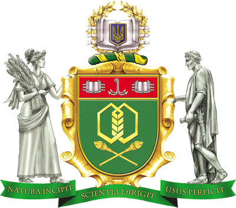

Дистанційне навчання (ДН) - це технологія, що базується на принципах відкритого навчання, яка широко використовує комп’ютерні учбові програми різного призначення і створює за допомогою сучасних телекомунікацій інформаційне освітнє середовище для навчального матеріалу і спілкування.
Для цієї технології характерна сильна пізнавальна мотивація, яка створюється мережею Інтернет, а також якістю підготовки спеціаліста. Все це робить дистанційне навчання - технологією навчання 21 століття.
Дистанційне навчання стає все більш і більш популярним як у всьому світі, так і в Україні. Дистанційна освіта буває різною по типу: це і вебінари, і онлайн-семінари, і навчання через Zoom чи MS Teams, і дистанційна вища освіта з одержанням диплома, який нічим не відрізняється від одержаного при стаціонарному навчанні.
В ОНТУ активно розвивається проект по ДН. Створений відділ організації дистанційної роботи та навчання центру ІКТ, затверджені Положення про дистанційне навчання в ОНТУ та Положення про відділ організації дистанційної роботи та навчання центру ІКТ, на сайті відділу організації дистанційної роботи та навчання центру ІКТ розміщені створені в системі Moodle навчальні курси для дистанційного та самостійного вивчення по дисциплінам, що викладаються в університеті. В навчальних курсах студентам доступні силабуси; конспекти лекцій; матеріали для лабораторних, практичних робіт; контрольні завдання; тести (після проходження яких можна побачити одержані оцінки).
Для роботи з навчальними курсами необхідно пройти реєстрацію, про особливості якої можна дізнатись на вкладці «Реєстрація користувачів».